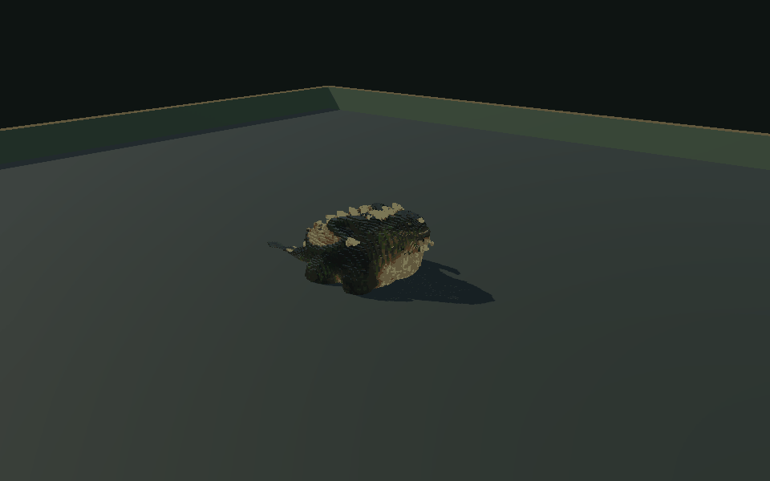
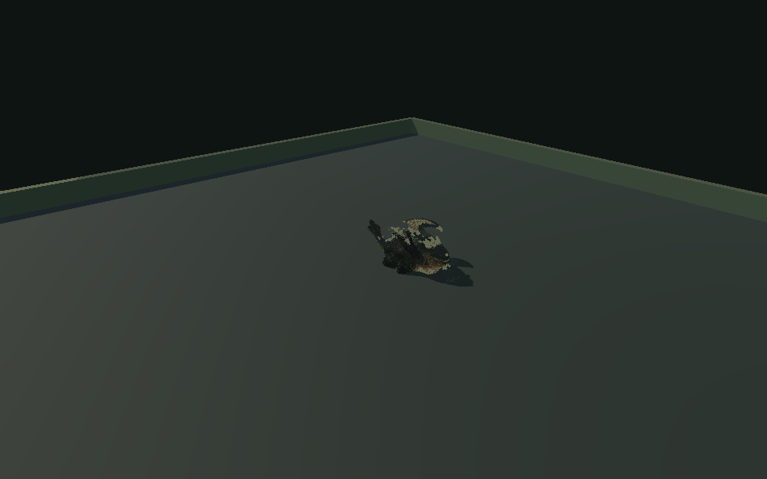
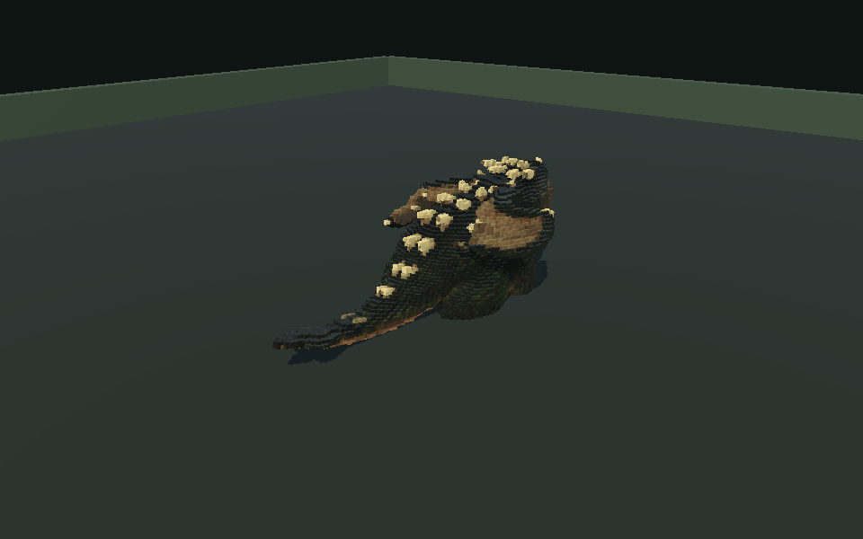

Aliento creado desde ceroBrillo en la boca, exhalación sostenida, llamas verdes y brasas. Fija su dirección antes de atacar y deja una apertura al terminar.
La secuencia del 75 %Ruge, salta alejándose, anuncia la dirección, carga en línea recta y frena. Se ejecuta una sola vez por intento.
Coletazo adaptadoEl barrido permanece detrás del cuerpo y su daño sigue los huesos de la cola. Moverse hacia el frente permite evitarlo.